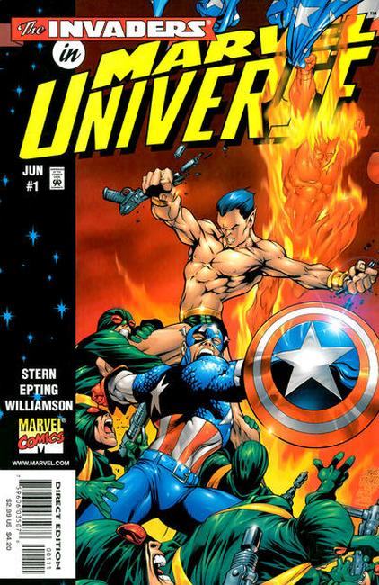

The Marvel Universe is both a creative concept and a series title.
The Marvel Universe concept is the shared universe where the stories in most Marvel comic book titles and other media published by Marvel Entertainment take place. Super-teams such as the Avengers, the X-Men, the Fantastic Four, the Guardians of the Galaxy, the Defenders, the Inhumans and other Marvel superheroes live in this universe, including characters such as Spider-Man, Captain America, Iron Man, Thor, Daredevil, The Hulk, Wolverine, Punisher, Moon Knight, Deadpool, Blade, Ghost Rider, Doctor Strange and numerous others.
The Marvel Universe is further depicted as existing within a "multiverse" consisting of thousands of separate universes, all of which are the creations of Marvel Comics and all of which are, in a sense, "Marvel universes". In this context, "Marvel Universe" is taken to refer to the mainstream Marvel continuity, which is known as Earth-616 or currently as Earth Prime.
Though the concept of a shared universe was not new or unique to comics in 1961, writer/editor Stan Lee, together with several artists including Jack Kirby and Steve Ditko, created a series of titles where events in one book would have repercussions in another title and serialized stories would show characters' growth and change.
Over time, a few Marvel Comics writers lobbied Marvel editors to incorporate the idea of a Multiverse resembling DC's parallel worlds. This plot device allows one to create several fictional universes which normally do not overlap. What happens on Earth in the main Marvel Universe would normally have no effect on what happens on a parallel Earth in another Marvel-created universe. However, storywriters would have the creative ability to write stories in which people from one such universe would visit this alternative universe.

Series: 7 issues 1998
Publisher: Marvel
The Spoils of War! - Written by Roger Stern. Art by Steve Epting, Al Williamson. Cover by Carlos Pacheco, Cam Smith.
Featuring the Invaders! In 1942, the Allies' greatest champions -- Captain America, the original Human Torch and Namor, the Sub-Mariner -- are gathered together by military intelligence in response to the theft of U-235 from the top-secret Manhattan Project! But the Nazis aren't in possession of the Uranium -- Baron Strucker and the organization that will become Hydra are! And the Baron has a secret edge that ensures his victory!